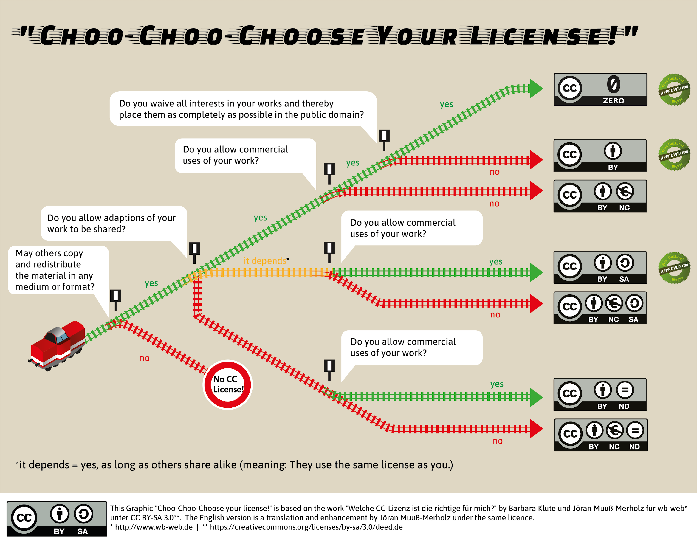

![]()
| Day | Date | Time | Title |
|---|---|---|---|
| 2 | 2026-05-08 | 09:30 - 10:00 | Introduction to Version Control |
| 2 | 2026-05-08 | 10:00 - 12:00 | Version Control of Data with DataLad |
| 2 | 2026-05-08 | 12:00 - 13:00 | Lunch Break |
| 2 | 2026-05-08 | 13:00 - 14:00 | Data publication |
| 2 | 2026-05-08 | 14:00 - 16:00 | Data Infrastructure: Nextcloud |
| 2 | 2026-05-08 | 16:00 - 16:30 | Summary & Outlook |
Data Publication
Research Data Management for Psychology and Neuroscience
Course at Julius-Maximilians-Universität Würzburg, RTG 2660: Approach-Avoidance
Slides | Source

13:00
Schedule
1 This session: Data Publication
Objectives
💡 You understand the importance of data publication for FAIR research data management.
💡 You can write Data Availability Statements for research articles.
💡 You know how to choose appropriate licenses for research data.
💡 You understand the role of persistent identifiers in ensuring reliable data access.
💡 You can select suitable repositories for different types of research data.
💡 You are aware of legal considerations when publishing research data.
Overview
Data publication is a crucial step in FAIR data management, ensuring data findability and accessibility.
Key components of data publication:
- Data Availability Statements
- Appropriate licenses
- Persistent identifiers
- Suitable repositories
2 Data Availability Statements
What is a Data Availability Statement?
A Data Availability Statement is a special section in an article that states:
- Whether the authors have made their research data available
- Where readers can access the supporting data
- Under what conditions the data can be accessed
Typical placement:
- Usually before the Reference section
- Some journals require these statements
- Highly recommended even when not required
Open Data Example:
“The datasets generated and analyzed during the current study are available in the Zenodo repository: https://doi.org/10.5281/zenodo.123456”
Note: This is an example. The DOI does not resolve.
Restricted data example:
“The datasets generated during the current study are not publicly available due to privacy restrictions but are available from the corresponding author on reasonable request.”
3 Licensing Data
Why Licenses Matter
Licenses are standard contracts that regulate usage rights:
- Enable reuse by clearly stating conditions
- Protect your interests as a data creator
- Prevent legal uncertainty for potential users
⚠️ Without a license, it’s unclear how others can reuse your data, and they might avoid it entirely!
Copyright Considerations
Important: You can only assign licenses to work you hold copyright for!
- Data from creative processes (humanities, qualitative social sciences) → likely copyrighted
- Data from simple measurements (natural sciences, quantitative social sciences) → likely not copyrighted
- When in doubt → use CC0 (public domain dedication)
Creative Commons Licenses
License elements:
- BY: Attribution required
- SA: Share-alike (same license)
- NC: Non-commercial use only
- ND: No derivatives allowed
From most to least permissive:
- CC0 (public domain)
- CC BY
- CC BY-SA
- CC BY-NC
- CC BY-NC-SA
- CC BY-ND
- CC BY-NC-ND
Licensing Recommendations
Best practices for research data:
- CC0 - when data likely not copyrighted (preferred)
- CC BY - when copyright applies but you want maximum reusability
- Avoid restrictive licenses (NC, ND, SA) unless absolutely necessary
⚠️ Why avoid restrictive licenses?
- Can prevent combining datasets
- May block follow-up research
- Creates compatibility issues
Choo Choo Choose Your License!

4 Persistent Identifiers
The Problem with URLs
Imagine this scenario:
- You publish data at
https://repository.university.edu/dataset123 - Repository shuts down or migrates
- Your dataset gets a new URL
- Papers linking to the old URL can’t find the data
Solution: Persistent identifiers (PIDs) that redirect to current location!
Digital Object Identifier (DOI)
What is a DOI?
- Points directly to digital object, not location
- Format:
10.5281/zenodo.4322849 - Access via:
https://doi.org/10.5281/zenodo.4322849 - Redirects to current location
Benefits:
- Permanent access
- Reliable citation
- Professional appearance
- Required by many journals
ORCID and ROR
ORCID (Open Researcher and Contributor ID)
- Unique identifier for researchers
- Links all your professional work
- Handles name changes, moves
- Free and self-maintained
ROR (Research Organization Registry)
- Persistent identifiers for institutions
- Disambiguates affiliations
- Used by many platforms
- Easier than typing full details
5 Choosing Repositories
Types of Repositories
Discipline-specific
- OpenNeuro (neuroscience)
- GenBank (genomics)
- Preferred when available
- Community standards
General purpose
- Zenodo
- Figshare
- OSF
- Good fallback option
Institutional
- University repositories
- May have restrictions
- Good for compliance
Repository Selection Criteria
Essential features:
- Assigns DOIs or other PIDs
- Supports appropriate licenses
- Long-term preservation commitment
- Good metadata support
Consider also:
- File size limits
- Access control options
- GDPR compliance
- Community usage
- Costs
Finding Repositories
Use these tools to find suitable repositories:
- Registry of research data repositories
- Search by discipline
- Filter by features
- Shows criteria with icons
Publisher recommendations:
- PLOS ONE recommended repositories
- Springer Nature guidance
- Journal-specific lists
6 Exercises
Exercise 1
Exercise 1: Data Availability Statement Analysis
Task: Examine published research articles and analyze their Data Availability Statements.
Instructions:
- Find 2-3 research articles from your field published in the last 2 years
- Look for Data Availability Statements in each article
- For each article, answer:
- Does it include a Data Availability Statement?
- If yes, where is it located in the article?
- Does it provide clear information about how to access the data?
- Are any restrictions or conditions mentioned?
- Is the data actually accessible through the provided link/information?
Discussion: What makes a good vs. poor Data Availability Statement?
Exercise 2
Exercise 2: Repository Selection
Task: Find and evaluate repositories for your research data.
Instructions:
- Visit re3data.org
- Search for repositories relevant to your research field
- Select 2-3 repositories and evaluate them based on:
- Does it assign DOIs?
- What file size limits exist?
- What access control options are available?
- Is it recognized in your research community?
- What are the costs (if any)?
- Does it support your preferred license?
Exercise 3
Exercise 3: Create Your Data Publication Plan
Task: Develop a data publication plan for your current or planned research.
Components to address:
- What data will you publish? (consider legal and ethical constraints)
- Which repository will you use? (justify your choice)
- What license will you apply? (explain your reasoning)
- How will you link your data to publications?
- What documentation will you provide?
- When will you publish the data? (consider embargoes, journal requirements)
7 Summary
Best Practices Summary
Data Publication Checklist
- Plan early - consider publication from project start
- Choose appropriate repository - discipline-specific preferred
- Use permissive licensing - CC0 or CC BY recommended
- Ensure persistent access - DOI required
- Write clear Data Availability Statement - link data and paper
- Document thoroughly - enable reuse
- Use standard formats - ensure interoperability
Legal Considerations
Remember to check:
- Copyright ownership - can you legally publish?
- Data protection - GDPR compliance for personal data
- Participant consent - did you get permission to publish?
- Export control - any national security concerns?
When in doubt, consult your institution’s legal or data protection office!
Questions?
Remember: Good data publication practices benefit everyone:
- You: increased citations, collaboration opportunities
- Science: faster progress, reduced duplication
- Society: better return on research investment
Next steps: Apply these concepts to your own research data!
Resources
Data Publication Guidance
- ARDC Guide to Choosing a Data Repository
- DCC Checklist for Evaluating Data Repositories
- How to License Research Data (DCC)
Repository Directories
- re3data.org - Registry of Research Data Repositories
- FAIRsharing - Database of data standards, repositories and policies
Publisher Recommendations
- PLOS ONE Recommended Repositories
- Springer Nature Data Repository Guidance
- Elsevier Public Repositories List
Licensing Resources
- Creative Commons License Chooser
- Open Data Commons Licenses
- Licensing Research Data (Brettschneider et al., 2021) [German]
Legal and Ethical Considerations
- Data Publication Decision Tree [German]
- Cambridge Data Availability Statements Guide
- Open Research Summer School: Data Anonymity by Felix Schönbrodt
Persistent Identifiers
- DOI.org - Digital Object Identifier System
- ORCID - Open Researcher and Contributor ID
- ROR - Research Organization Registry
Training Materials
RDM Course